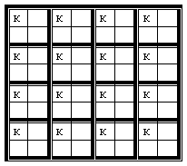

Problem ID 102879
What is the maximum number of kings, that cannot capture each other, which can be placed on a chessboard of size $8 \times 8$ cells?
Solution
In a $2 \times 2$ square, there can be no more than one king. Therefore, if there are 16 non-intersecting squares of $2 \times 2$ cells on the chessboard, no more than 16 kings can be placed of the chessboard. Indeed, you can place 16 kings, for example, if you place them in the upper left corner of each square.
